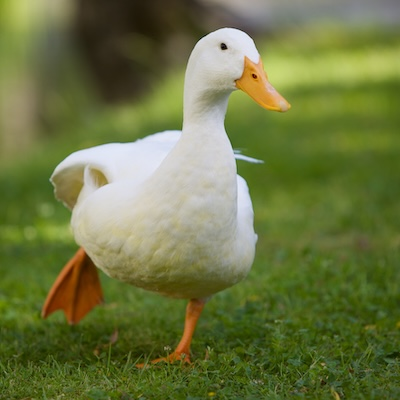

THE MOST IMPORTANT HEADING (FAKE)
This is an example of an inaccessible website.
The heading above this is an h2. There is no h1, so this structure is incorrect. Also, I typed the heading in all-caps which is inaccessible to screen-readers.
Here is another section about ducks. My favorite duck is the white Pekin duck shown below. There is no alt text for this image, which is inaccesssible.
In this next heading, I used an h4 and skipped an h3. The list is also fake.
• Mallard
• Pekin
• Hook Bill
Rubber ducks are a tradition in Computer Science. We use them for 'Rubber Duck Debugging' where we talk through our problems to the rubber duck (kind of like a therapist). Click here to read about it. That link is not descriptive and does not have a title.
This paragraph is way too long. It needs to be broken into shorter chunks to make it more accessible and easier to read. Rubber ducks have a surprisingly long history that dates back to the late 1800s when rubber manufacturing became more common, allowing toys to be mass-produced for children. Over time, rubber ducks became popular bath toys because they float, are lightweight, and are easy for children to hold. In the 1940s and 1950s, rubber ducks became even more famous through advertising and pop culture, especially after appearing in songs, cartoons, and television shows. Today, rubber ducks are used for more than just bath time; they appear in art installations, races for charity, and even in computer science as a symbol of rubber duck debugging, where programmers explain their code out loud to find mistakes. Because this paragraph includes many ideas all at once without any breaks, it can be overwhelming for readers, especially those with learning disabilities, attention difficulties, or who use screen readers.